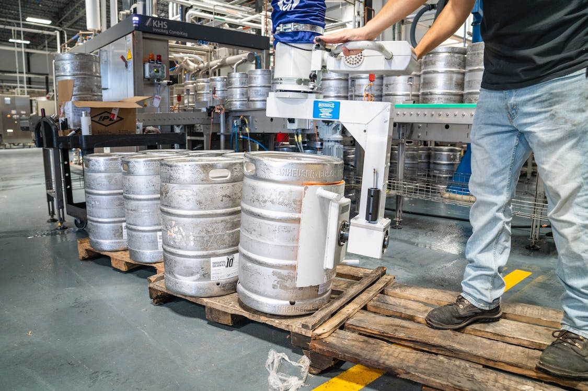

Nuestra fábrica
El corazón de nuestra revolución, donde el arte de crear se junta con la magia de un equipo entusiasta y apasionado. Nuestra primera fábrica en Córdoba es consecuencia del deleite y admiración por el trabajo constante. Desde el 2013, hacemos cerveza con las manos y el corazón porque creemos que la evolución sucede, entre muchos, unidos y con la pasión que nos define desde el primer día.
Córdoba,Argentina
En el corazón de Córdoba instalamos nuestra primera fábrica de birra artesanal
Puedes vivir una autentica experiencia en el tap room con
cerveza directamente de los fermentadores